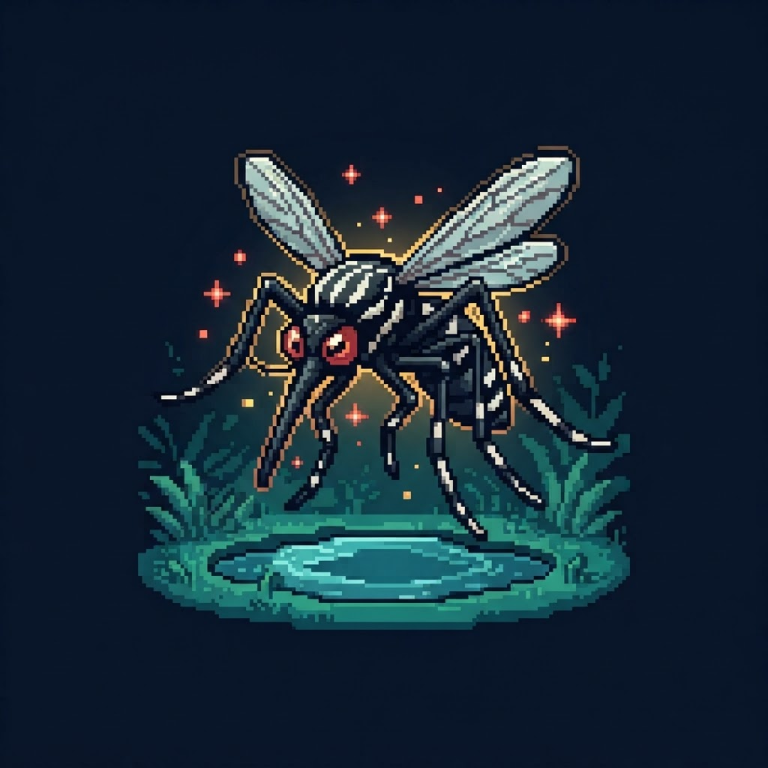
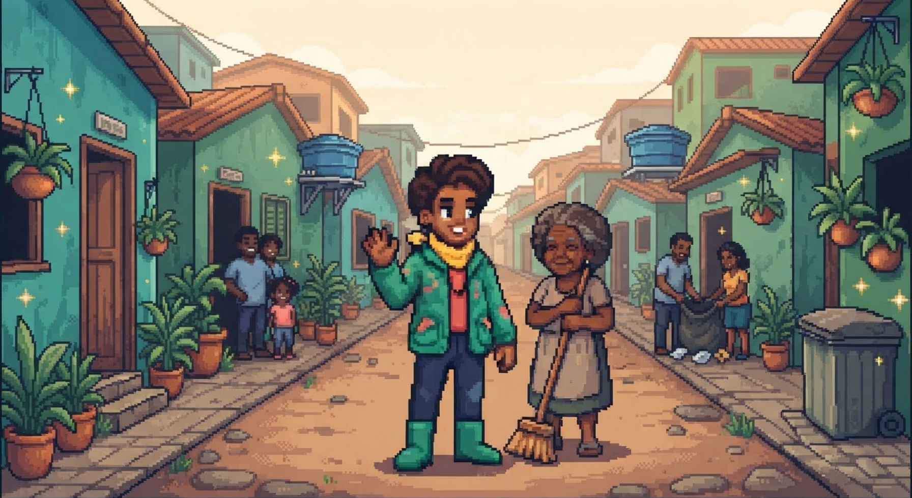
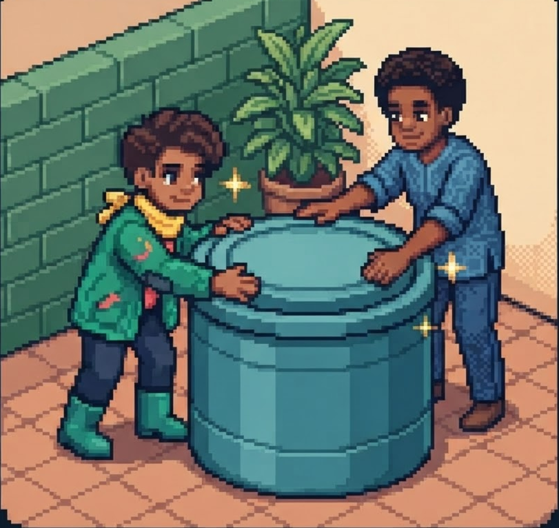
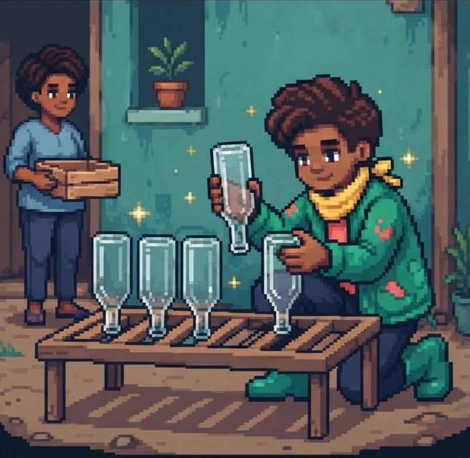
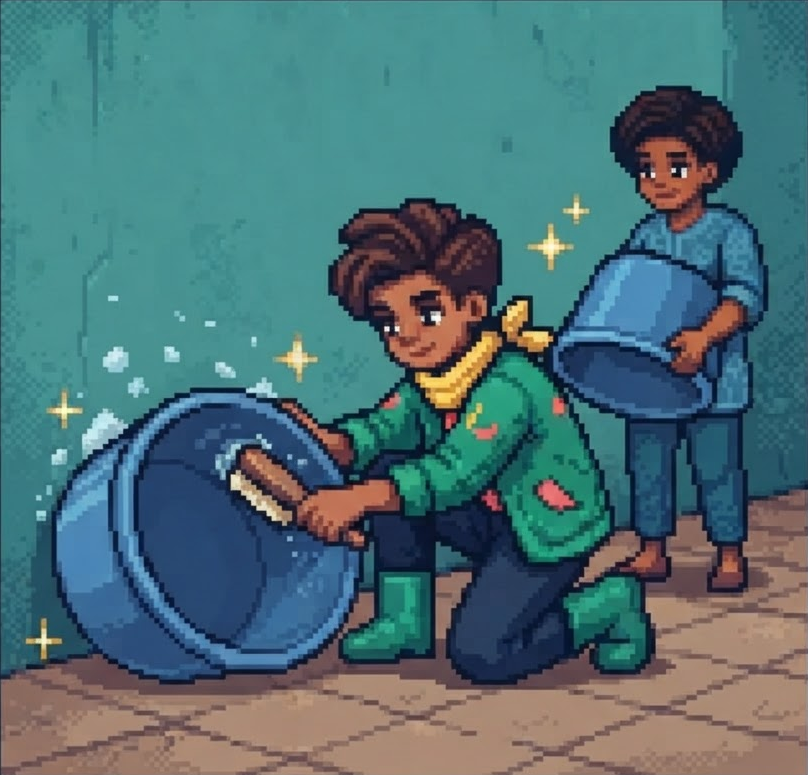
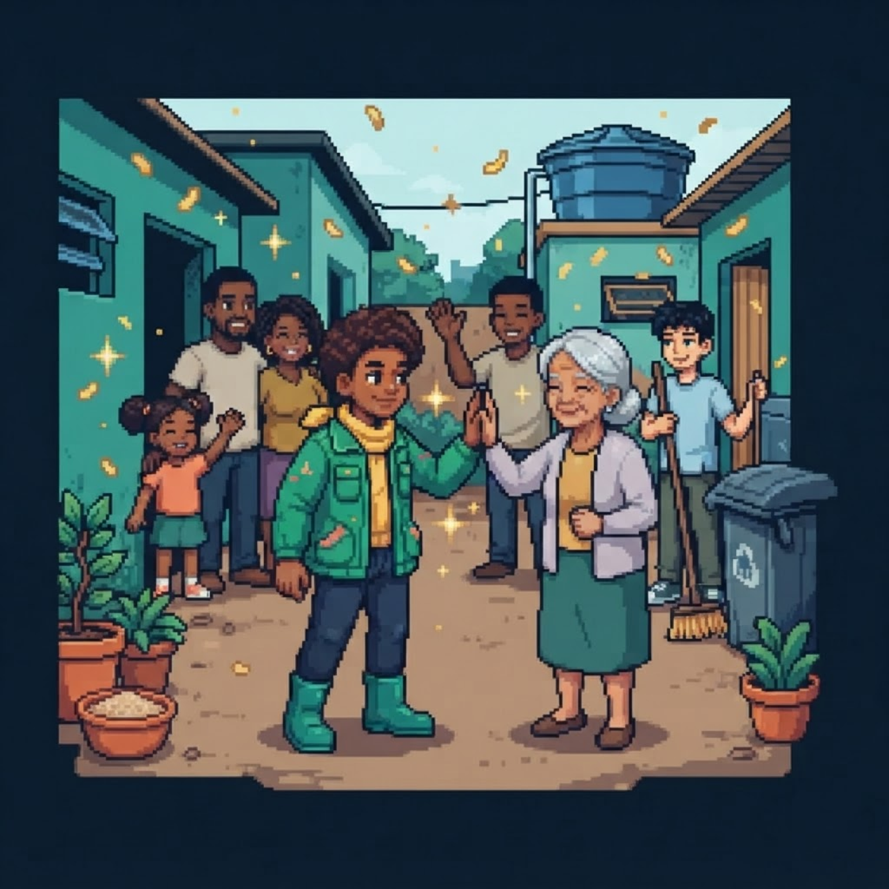

■ Tatuí, SP • Modo cooperativo
Tatuí precisa
de um herói.
Você.
O mosquito é o vilão. O seu bairro é o cenário. Aprenda a eliminar criadouros e entre nessa aventura contra a dengue.
Começar missão ▶
10 min. por semana.
Um cuidado de verdade.
Iniciativa comunitária independente. Não é um portal oficial.

Missão principalTirar a água. Quebrar o ciclo.
- ⌕ Explore os esconderijos
- ◔ Elimine a água parada
- ☺ Proteja sua comunidade
■ Fase 01 / Conheça o vilão
Pequeno mosquito.
Um grande problema.
Na vida real, não dá para perder vidas extras. Conhecer o mosquito é o primeiro passo para se proteger.
- 🦟
Reconheça o inimigo
O Aedes aegypti é escuro e tem marcas brancas no corpo e nas pernas. Ele pode transmitir a dengue.
- 🔍
Encontre seu esconderijo
Recipientes com água parada podem virar criadouros. Até objetos pequenos merecem atenção.
- 👀
Descubra o ponto fraco
Sem água acumulada, o mosquito perde espaço para se reproduzir. A prevenção começa em casa.
■ Fase 02 / Entre em ação
Cada criadouro eliminado é uma vitória.
Explore sua casa de verdade. Estas são as missões que fazem a diferença no combate à dengue.

Casa e telhado
Feche as portas do vilão.
- Mantenha a caixa-d'água bem tampada.
- Limpe as calhas e retire folhas e sujeira.

Quintal e garagem
Nada de água escondida.
- Guarde pneus em local coberto.
- Deixe garrafas vazias viradas para baixo.

Vasos e recipientes
Esvazie. Esfregue. Repita.
- Elimine toda água parada.
- Esvazie e esfregue recipientes, incluindo as paredes.
ⓘ Missão segura: não suba em telhados nem se exponha a riscos. Para locais de difícil acesso, peça ajuda adequada.
■ Fase 03 / Salve na sua rotina
10 MIN
Uma vez por semana.
Toda semana.
Não espere encontrar um mosquito. Reserve 10 minutos para procurar e eliminar os possíveis criadouros.
▦ Que tal todo sábado de manhã?
Checklist do herói
0/5Missão recorrente. Proteção contínua.
?
■ Fase 04 / Teste seu conhecimento
Você sabe vencer essa fase?
Um detalhe pode mudar sua missão. Confira o desafio e leve esse conhecimento para o próximo cuidado com a casa.
Sem game over. Aqui, você aprende.
Só jogar fora a água de um recipiente é suficiente?
Os ovos podem ficar aderidos às paredes do recipiente. Por isso, além de esvaziar, esfregue bem as paredes e as bordas para ajudar a removê-los.
■ Saúde / Aqui o cuidado é sério
Na dúvida, cuide da sua saúde.
A dengue é uma doença que exige atenção. Reconheça os sintomas e saiba quando procurar ajuda.
♙ Fique atento aos sintomas
- Febre alta
- Dor de cabeça e atrás dos olhos
- Dores no corpo
- Manchas vermelhas na pele
Suspeita de dengue? Procure um serviço de saúde.
Hidrate-se e não se automedique. A avaliação de um profissional é essencial.
⚠ Procure atendimento imediatamente
- Dor abdominal intensa e contínua
- Vômitos persistentes
- Sangramento
- Tontura ou desmaio
A febre baixou? Isso não significa necessariamente melhora.
Não espere os sintomas passarem se houver sinais de alarme. Busque atendimento de saúde.
Importante: os canais de denúncia de focos não substituem o atendimento médico.

■ Fase 05 / Convoque seu time
O melhor time é
o seu bairro.
Você não precisa de superpoderes. Uma conversa com quem mora perto já pode começar uma corrente de cuidado.
- 01
Convide um vizinho
Combinem um dia para cada um cuidar da própria casa.
- 02
Compartilhe o que aprendeu
Leve o checklist para a família e para o grupo da rua.
- 03
Cuide sem se arriscar
Viu um possível foco fora de casa? Use os canais oficiais.
■ Central de apoio / Canais oficiais
Encontrou um possível foco? Acione quem pode ajudar.
Para comunicar possíveis criadouros em Tatuí, procure a Prefeitura pelos canais abaixo. Aqui você encontra orientação; nenhuma denúncia é enviada por este site.
☏ Setor de Combate à Dengue
Av. Cônego João Clímaco, 140, Centro, Tatuí.
☏ Ouvidoria Municipal
Canal oficial onlinehttps://tatui.eouve.com.br/
Abrir
Ouvidoria ↗
O registro é feito no ambiente oficial da Ouvidoria, fora deste site.
Antes de entrar em contato, reúna:
- 📍
Endereço completo
Rua, número e bairro do possível foco.
- 🚩
Ponto de referência
Algo que ajude a localizar o lugar.
- 📝
Descrição do problema
Conte onde e como a água está acumulada.
- 📷
Fotos, se possível
Registre apenas de um local seguro.
⛉ Não entre em terrenos de terceiros nem se exponha a riscos para registrar um
foco.
♡ Está com sintomas? Procure um serviço de saúde. Estes contatos servem para relatar focos e solicitar orientação municipal, não para atendimento médico.